OBSERVE
On this page
Recommendation: Distinct buyer and highest operational stakes; keep a separate product boundary.
On a small screen, swipe horizontally to read every column.
| Snapshot | Assessment |
|---|---|
| Supplied location ID | OBSERVE |
| Product family | Operations |
| Implementation stage | Broad observability implementation |
| Review date | 2026-09-26 |
| Local state | local changes present |
Vision and the problem it addresses
Provide self-hosted Kubernetes telemetry and AI-assisted investigation from one installation, with clear visibility into infrastructure and cost.
Who needs it: SREs, platform engineers and teams operating Kubernetes clusters.
The moment it becomes useful: An incident requires jumping among metrics, logs, traces and infrastructure views, while hosted telemetry costs grow with volume.
How it works

This diagram summarizes the inspected design. It is not evidence of a successful end-to-end deployment. For a hands-on journey, use the onboarding guide.
How well it addresses the problem
- The inspected metrics route authenticates, validates query input, handles upstream errors and caches results.
- The repository combines runtime Helm infrastructure with UI, MCP tools and investigation code.
- Metrics/logs/traces use specialized established backends rather than a custom telemetry database.
These are implementation strengths. Repeated use, customer demand and measured business outcomes remain separate questions.
What is missing or unproven
- Auth at the route is not proof of tenant or project isolation. The sampled instant-query route forwards supplied PromQL and has a query/time cache key without visible project identity; trace upstream scoping before using it for hard multitenancy.
- eBPF permissions, kernel compatibility, retention and backend sizing affect whether a one-install promise holds on a customer cluster.
- An AI explanation is not a verified root cause. Safe remediation needs evidence, bounded actions and rollback.
- Potential waste estimates are not realized bill savings. No cluster rollout, attack test or live incident drill was performed here.
Smallest useful next step
Run a repeatable incident drill on a disposable cluster: inject one latency fault, compare manual and assisted diagnosis, check evidence, time to recovery and false leads.
Acceptance exercise: Trace a single synthetic request through metrics/logs/traces. Verify stale/no-data states, cross-project access denial, retention behavior and alert delivery in a sandbox. Validate dashboard costs against a known resource allocation.
This is a proposed validation exercise unless explicitly recorded as executed in VALIDATION.
Position in the portfolio
Related work: FreeLLMAPI, Foundry / AI SDLC, Spreix Platform.
Read the overlap and integration decisions before merging features. Shared vocabulary does not guarantee shared IDs, permissions, storage or lifecycle semantics.
On a small screen, swipe horizontally to read every column.
| Reviewer judgment, 1–5 | Score |
|---|---|
| Effort to a credible narrow pilot | 4 |
| Potential breadth and recurrence of the need | 5 |
| Integration, operational and consequence exposure | 5 |
These are ordinal planning judgments, not completion percentages or a commercial valuation. Empty/archive projects should be parked rather than treated as active bets.
Evidence and next reading
Source references and snapshot limits · Developer / Claude onboarding · Portfolio synthesis